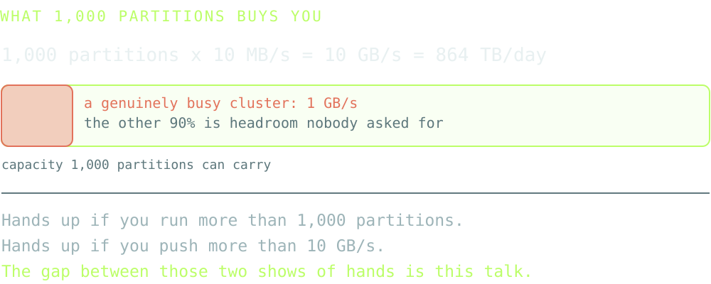
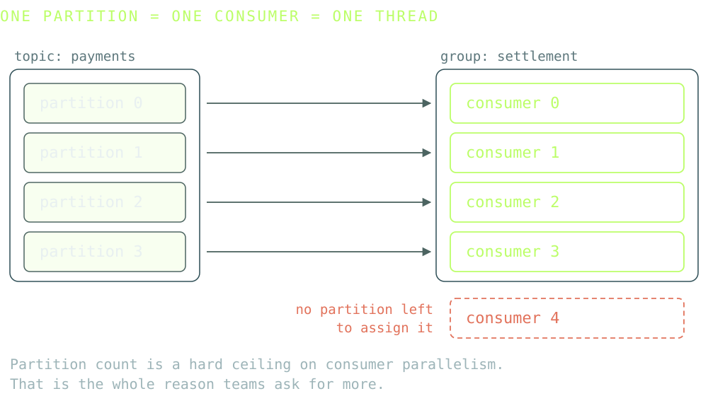
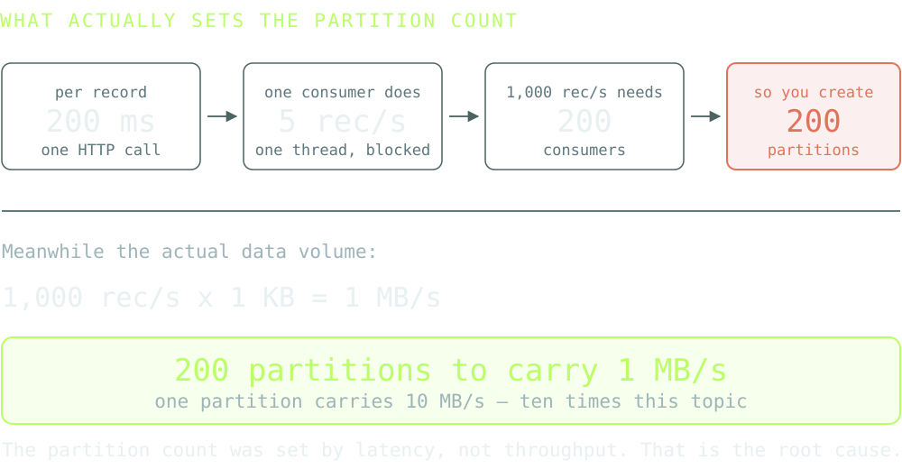
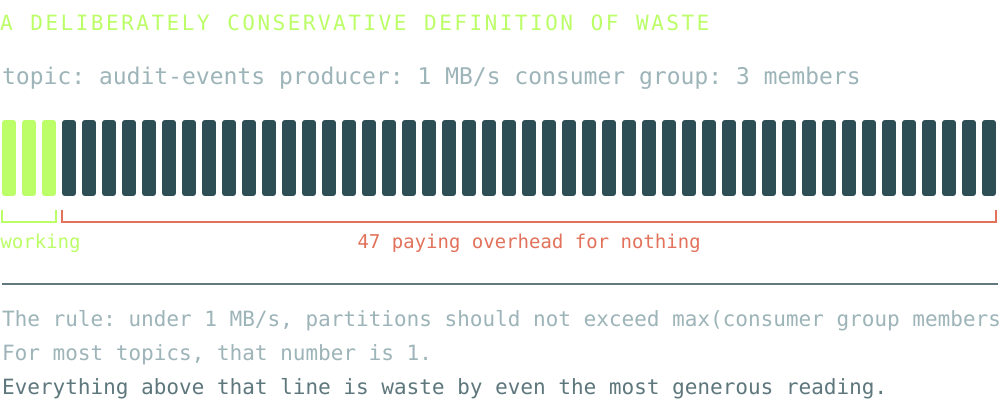
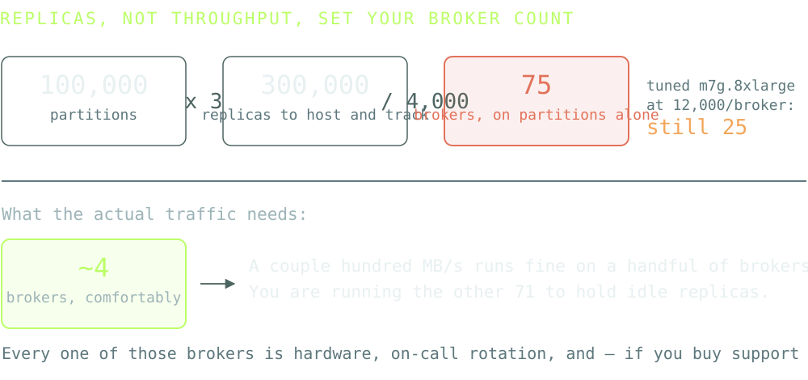
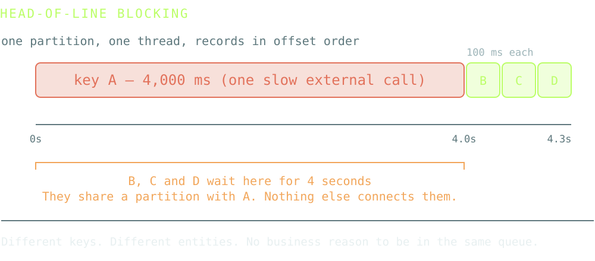
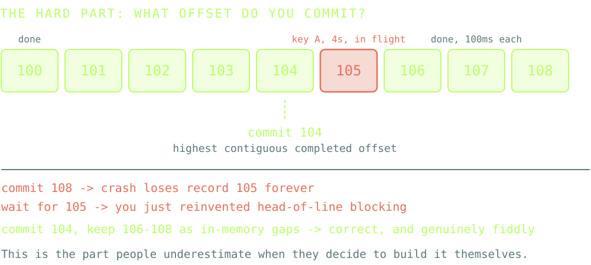
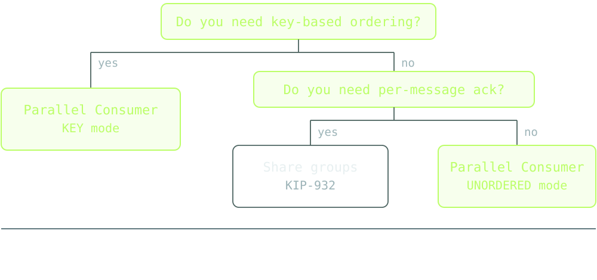

Chuck Larrieu Casias
Conduktor
Current 2026
So your topic count is the floor on your partition count.
How many topics do you run?
A hundred? A thousand? More?

If it were, most of this room would be running a few dozen.
So what is setting it?
Everything here is arithmetic you can run against your own cluster before lunch. No benchmarks, no trust required.
What it costs, and why you already have it


hash("user-123") % 6 -> partition 2
hash("user-123") % 4 -> partition 0Drop the partition count and every key relocates. Ordering breaks, compaction breaks, downstream state breaks.
Kafka will happily let you go up. There is no route back down except building a new topic and migrating onto it.
Over-provisioning is a one-way door that costs nothing to walk through.
"When in doubt, slightly over-provision. Adding partitions is easy; removing them is not."
"Small cluster: 3 × broker count per topic. If you expect 20 consumers, start with at least 20 partitions."
Both of those are from our own internal guidance. We never published them. I'd have written the same thing five years ago.

Per partition-hour, plus hard ceilings per unit of capacity. Confluent Cloud allows 4,500 partitions per CKU.
Partition waste can have you buying a cluster rated for 240 MB/s produce and 720 MB/s consume — to move about 10 MB/s.
On a large cluster, the conservative figure lands in the hundreds of thousands of dollars a year.
True. And not the same thing as free.

KRaft fixed the cluster. It did not fix the broker.
"Replicating 1000 partitions from one broker to another can add about 20 ms latency, which implies that the end-to-end latency is at least 20 ms." Jun Rao, Confluent
Failure, restart, routine upgrade — every partition that broker led needs a leader election.
The election is the same work whether the partition carries 100 MB/s or nothing at all.
An idle partition skips the data catch-up. It does not skip the election. 10,000 idle partitions is 10,000 elections.
This is the one that turns a cost conversation into an availability conversation — and that's usually when people start listening.
Either way, partition waste often dominates the cost of running Kafka.
The good news: most of it is recoverable.
Stop making new waste
You become a ticket queue. Teams route around you, or ship late and resent you for it. Neither outcome survives contact with a deadline.
The policy is the review. Teams self-serve at full speed inside a boundary you set, and you are not in the loop.
If prevention costs the platform team a meeting per topic, it will not happen.
apiVersion: self-serve/v1
kind: ResourcePolicy
metadata:
name: partition-budget
spec:
targetKind: Topic
description: "Partitions get justified, not inherited"
rules:
- condition: spec.partitions <= 6
errorMessage: "More than 6 partitions needs a measured throughput number"
- condition: metadata.labels.owner != ""
errorMessage: "Every topic has a named owner"Three properties that matter more than the syntax: it runs at creation, it fails with a reason, and it lives in git next to everything else.
Every copy-pasted topic inherits 30 partitions forever. Nobody chose 30. Somebody chose it once, in 2019, for a different topic.
Going up requires a sentence of justification. Most topics never need one.
The ceiling stops the worst case. The default decides the median.
Deal with the waste you already have
One shared cluster. One line on the cloud bill. Forty teams.
Tags stop at the resource boundary. The cluster is one resource. There is no tag that says which team's topics are holding those replicas.
Attribute partition-hours, bytes and storage to the application that owns the topic. This is the only layer where the question is answerable.
This is why FinOps teams stall on Kafka specifically. Their entire toolchain works at the resource boundary, and Kafka hides forty tenants behind one.
Not the cluster's waste. Theirs. With their name on it.
Most teams clean up without being asked.
The ones that don't now have a number attached to them, which is a different and much easier conversation to have.
Stop needing the partitions in the first place
"We need more partitions.
Our consumer can't keep up."
This ticket is the single largest source of partition sprawl I see.
And it is almost always a correct observation with the wrong remedy attached.
Consumers that can't keep up are almost never CPU-bound. They're waiting.
One partition = one unit of work = one thread.
That model is fine when processing takes microseconds. It collapses the moment processing means waiting on something else — and in 2026 that is most consumers.

Nobody in your business cares whether user_42 lives on partition 7 or partition 23.
They care that events about user_42 are processed in order.
More things happening at once.
Permanent infrastructure. More replicas to host, longer leader elections when a broker dies, more controller work, and a bigger bill on anything priced per partition.
You converted a processing problem into an infrastructure problem — through a one-way door.
And you only get parallelism up to the partition count, so the next slow dependency starts the cycle again.
Share groups are genuinely good. They are also solving a different problem.
KIP-932, GA in Apache Kafka 4.2
Available -> Acquired -> AcknowledgedFor job queues this is exactly right. Render this PDF, send this email, transform this image. Independent tasks, per-record retry, maximum throughput.
"The records in a share-partition can be delivered out of order to a consumer." KIP-932
Can, in a distributed system under load, means will.
UserUpdated(user=42) arrives at offset 10.
UserDeleted(user=42) arrives at offset 50.
Process them out of order and you have just resurrected a deleted user.
Both are excellent. The semantics are not interchangeable.
across keys
within a key
of offset commits
Decoupled from how many partitions the topic happens to have.
Two of these are easy. The third is where homegrown attempts die.

The concurrency cost. Millions of them, and a blocking HTTP call no longer pins an OS thread. Genuinely great for IO-bound work.
Ordering and offset-commit correctness. Those are a different layer, and they don't come for free with a cheaper thread.
Thread per partition: about the same as the vanilla consumer. Thread per key: now you need in-flight key tracking, a completed-offset tracker, backpressure, rebalance handling and bounded memory.
Which is to say: you've started writing Parallel Consumer.
| Mode | Ordering guaranteed | Use it for |
|---|---|---|
| KEY | Records sharing a key process sequentially; different keys run concurrently | Event-driven systems, event sourcing |
| UNORDERED | None | Independent tasks, order irrelevant |
| PARTITION | Per-partition, same as vanilla | Vanilla semantics without multiplexing N partitions onto one thread |
KEY is the default, and it's the one you want. You set maxConcurrency, not partition count.
One instance assigned 10 partitions can run 10, 100 or 1,000 concurrent units of work — without touching the rebalance protocol or stealing partitions from anyone.
| Library | Shape | Worth knowing |
|---|---|---|
| parallel-consumer github.com/astubbs |
Java, wraps the vanilla consumer | Confluent deprecated the original; Antony Stubbs, one of its original implementers, forked it and is actively improving it |
| kpipe github.com/eschizoid |
Java virtual threads over the vanilla consumer | Newer and smaller. I have not run it in anger — evaluate before you depend on it |
| llingr-demux llingr.io |
Go core; Java/Kotlin/Scala bindings, Rust FFI, gRPC sidecar | Per-key routing to workers with contiguous offset commit. Marked patent pending and the licence isn't published — check that before adopting |
Performance figures on these projects are the maintainers' own. Benchmark against your workload before you believe any of them, mine included.

Key-level parallelism belongs in org.apache.kafka.clients.consumer, not in a third-party library you have to know exists.
Somebody proposed roughly this in 2019 — KIP-X, "a cooperative consumer processing semantic". It went nowhere.
Partition-level parallelism is a poor default for event-driven systems, and an actively bad one for anything calling a model.
What lies you can tell when you can't change the app
That somebody will change the consumer.
The platform team owns the cost. The app team owns the fix. That gap is where partition waste lives permanently.
It is not a reverse proxy. It parses the Kafka wire protocol — every request typed, versioned and decoded before it reaches a broker.
client -> Metadata request
broker -> "the brokers are at 10.0.0.5:9092, 10.0.0.6:9092"
proxy -> rewrites that to "proxy:9093, proxy:9094"
client -> every subsequent connection comes back through the proxyThat rewrite is why a plain TCP load balancer in front of Kafka gets bypassed within one round trip — and why a protocol-aware proxy doesn't.
Sitting in the protocol path means the client's view of the cluster is something you control rather than something you report.
Virtual clusters. Each team gets isolated bootstrap servers, its own topic namespace, its own ACLs — on shared physical infrastructure.
Nine non-prod clusters, each with its own brokers, its own internal topics, its own per-broker partition overhead, all running at 2% utilisation.
One physical cluster. Nine tenants who cannot see each other. Eight clusters' worth of overhead deleted.
Non-prod is the easy win: the isolation requirement is real, the throughput requirement is nearly zero, and nobody is emotionally attached to a dev cluster.
Topic concentration. Many logical topics fold onto fewer physical partitions behind the proxy. Clients see their own topic and never know.
Aimed squarely at the long tail: dead-letter queues, audit topics, per-tenant topics, non-prod scratch. Hundreds of topics, almost no data, all of them holding replicas.
This does not shrink an existing topic. Nothing does — you still migrate onto a right-sized topic. What concentration changes is the destination: set the rule up front, and matching topics land on shared physical partitions as they migrate.
A thought experiment, not a product. Nobody has built this. I think it's interesting and I'd like to be told why it's wrong.
For one specific slow app, the proxy advertises more partitions than the topic really has, then maps them back to the real partitions underneath.
The app scales horizontally as if it had the partitions. No library migration, no rewrite, no access to the source needed. The platform team acts alone.
Where I expect it to break: offset semantics across the virtual-to-real mapping, per-key ordering once two virtual partitions share a real one, and consumer group rebalancing that now has to be simulated.
If you can see a fourth reason it breaks, find me afterwards. That's genuinely why it's in this talk.
A checklist, and a way to choose
throughput < 1 MB/s and partitions > max group members.Steps 2 and 3 are the ones people skip, and they're the ones that make the number defensible.
| Your situation | Reach for |
|---|---|
| Topics still being created | Prevent — fix the template default, then the ceiling |
| Sprawl exists, teams are responsive | Clean — attribute it, then let them act |
| Consumer too slow · per-key order matters · you can change the app | Fix — per-key concurrent consumer |
| Consumer too slow · ordering genuinely irrelevant | Share groups — the right tool for this one |
| Consumer too slow · you cannot change the app | Patch — proxy, and accept the trade |
| Long tail of tiny topics · non-prod sprawl | Patch — virtualisation and concentration |
Two questions get you to a row: does per-key order matter, and can you change the app?
Run steps 1 to 4 of that checklist. It takes an afternoon.
Most teams are genuinely surprised by the answer — and you cannot make the case for any of the other three layers without it.
Then change one template default from 30 to 1. That's the cheapest structural fix in this entire talk, and it stops the bleeding while you deal with the rest.
Chuck Larrieu Casias · Conduktor
Slides, checklist and sources:
chuck-alt-delete.github.io/partition-tax
Ask me about the virtual partition idea. I still think there's something there.
m7g.8xlarge — AWS MSK quotas documentationgithub.com/astubbs/parallel-consumer (fork of the deprecated confluentinc/parallel-consumer)github.com/eschizoid/kpipe · llingr-demux — llingr.io